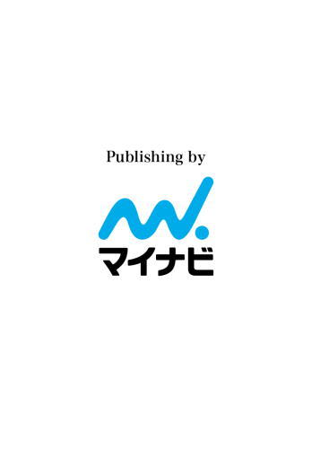

| アインマル | |
| 伊野瀬 凜 | |
| マイナビ (2013) | |

僕は確かに出会った。
あの満開の桜の下で青い大きな瞳の少女に出会ったのだ。それを誰が見ていないと言おうとも。
目を開けたその先に誰もいなかったとしても。
あの出来事は何だったのだろうか、誰だったのだろうか。
そう問いかけても応えてくれる人が唯一人もいなくて。
握りしめた拳を空へ翳してみる。
三月二十五日九時、晴れ。
「章太郎、庭の草むしりしてー」
「はーい」
忙しく段ボールをあちこちに運ぶ母に言われ僕は庭へと歩いた。小さな縁側をぴょいと飛び越えればすぐ庭が広がる。それは決して大きいものでは無かったけれども、僕にとって初めてのそれは輝いて見えたものだ。
ここには昨日引っ越してきた。親の転勤というよく聞く理由。クラスの皆と別れるのは淋しかったし、引っ越し先がど田舎だと聞いてもっと哀しくなった。
それでも引っ越してしまえば、小学生の僕にとっては都会ではないということは大した理由にもならず、この庭も目の前に広がる森も川も、全てが自分だけの宝物に思える。
――すげー田舎！大自然！野生動物とか出たりしないかな。
今まで住んでいたところでは見ることの出来ない風景に心はどこまでも飛んでいってしまっている。早く外に出たかった僕は急いで草むしりを開始した。
今までマンション暮らしの僕にとって草むしりは初めての経験だったけれど、それほど広くないここは三十分もすれば綺麗になった。横を見れば積み上げられた土が付いた雑草たち。これはどうしたらいいのだろうか。
「お母さん、この草どうすればいいの？」
縁側から中へ顔を覗かせて母に聞く。
「ああ、そこに置いてあるビニール袋に入れてゴミ置き場に置いといて。ゴミの日になったら持っていってくれるはずだから」
「そう」
言われた通りに何十リットルも入る大きな袋にがさがさと乱暴に入れていく。一袋では入りきらなくてもう一袋使った。
――こんなでかいのを一人で持ってくのか。
存在感溢れる二つの袋を前に、僕は呻る。後ろには母がいるが期待出来ない、頼んでも一蹴されるだけだろう。でももう僕も十歳で五年生になったのだ。このくらい一人で出来るようにならないと。
僕は縁側に置きっぱなしの携帯をズボンに入れた。これは引っ越しする時にまた前の友だちと連絡が取れるようにと、つい一週間前に買ってもらったものだ。
「んしょっ」
そう意気込んだ僕は、ふんっと勢いづけて袋を持ち上げる。いくら草だといってもやはり二つは重過ぎる。それでも帰ったら母に褒められたくて力の限り持ち上げた。
「行ってきまーす」
「気を付けてね、帰ってきて部屋の荷物運びしてくれたらお昼にするから」
「はーい」
ずるずるとたまに引きずってしまいながらゴミ置き場を目指す。
「あそこか」
こんな田舎では家と家の間も離れていて、共有のごみ置き場も当然僕の家からは離れている。最初はすぐ近くだろうと思っていたので途中でくたびれて諦めそうになったけれど、ここで止めたら大人になれないと変な使命感に襲われて汗だくになりながらやっとの思いで辿り着いた。
どすん、と鈍い音を立ててゴミ袋は落ちていく。これで今日の仕事は終いなはずだ。ふう、と息を吐きながら後ろを振り向いた。ここはちょっとした坂の上で新しい街が広がる景色に少しだけ心が動かされる。
「すげー自然ばっか。これ夕陽と一緒に見たら綺麗なんだろうな」
その時急に強い風が吹いた。
道に寄り添うように咲いていた桜が大きく舞う。
目の前が薄いピンクで覆われて思わず目を瞑った。
「うわっ、何で急に......え」
やっと風が収まって目を開ければ先程の桜の欠片たちはすでに消えていて、その代わりにもっと驚くものがいた。
人だ。
しかもここではあまり見ないような若い女の人。
「え、今までいなかったのに」
「Grüss Gott.（こんにちは）」
「へ？え、あ、外国人？どうしよう」
「Ach,スミマセン。こんにちは」
「よ、よかった。日本語話せるんだ......」
女の人は少しだけ笑って「少しだけ」と言った。
「ワタシ名前エルザ・フランクです。あなたは？」
「エルザ？僕は章太郎、木下章太郎です」
エルザがふわりと笑う。
僕はこんな笑顔を見たことがない。
満開の桜の下でエルザの細やかな金糸が揺れる。
瞳は深い蒼で何処までも吸い込まれていきそうだ。
「ついこの間引っ越してきたの。パパの仕事日本になって」
その言葉に僕は驚いた。
「本当！僕も昨日引っ越してきたんだ」
「よかった、ワタシこっちに友だち誰もいないの。一緒に遊んでもイイ？」
もちろん断る理由など無い僕はぶんぶんと勢いよく首を縦に振った。
「いいよ！」
まだ学校も始まらない時期に友だちが出来るなんて思ってもみなかった僕は、嬉しくて桜並木をにこにこ笑いながら歩く。エルザも同じように笑っていた。
オーストリアから来たというエルザはここに引っ越してきて一番桜に驚いたと言った。ここの桜は日本人の僕でも驚く程立派で、しかもずっと遠くまで並んでいるものだから桜の中を歩いているようだ。
遊ぶと言っても二人ともここの地理に詳しくないので、どこに行ったらいいのか分からない。だから、途中で見つけた公園へと入ってみた。今は春休みであるし子どもがいると思っていたけれども、何故か一人もいなかった。携帯で時計を確認すると十一時を過ぎていて昼ごはんで帰ったのだろうと思う。三つ並んでいるブランコに僕たちは座った。
「お昼近いからか誰もいないね、エルザはお昼平気？」
「うん、もうちょっと大丈夫だよ」
ちょうどいい柔らかな風が二人を包むので、エルザの綺麗な髪の毛はきらきらと舞うようになびいている。
本当に現実なのか。こんな風に外国の人を間近で見たこともなくてそんなことを思う。するとじーっと見過ぎていたのかエルザがこちらを向いて「どうしたの」と笑った。
それがまるで一つの風景のような静けさで、僕は目を丸くした。
「あ、いやごめん。僕外国の人と話したことが無くてちょっと緊張しちゃったんだ」
「ふふ、いいよ。ワタシだって章太郎は外国人だもの」
「そっか」
「うん、そうよ」
首を少しだけ傾けながらエルザは嬉しそうに僕を見た。そうだ、考えてみればお互いがお互いに外国人で、偶然出会わなければ普通は一生会えないような距離に住んでいたんだ。僕はちょっとだけ神様はいるのかなと思ってしまった。
それくらいエルザは可愛い。僕より何歳も上だろうけれど、笑う仕草が幼くて今まで見た女の子の誰よりも可愛いと思った。
僕は照れてしまい、さまよいがちな手を誤魔化すようにポケットに突っ込んだ。その手にこつんと何かが当たる。先ほど仕舞った携帯だと気が付いた時、一つ思い付いた僕は思い切ってエルザに話し掛けた。
「ねえ、写真、撮ってもいい？」
「写真？」
「うん、携帯で撮れるから今日の記念に二人でさ」
「記念......うん、いいよ」
照れたように笑ってくれるエルザを見て嬉しくなる。
慣れない動作でカメラを起動させてフレームに収まるように二人で寄り添う。カシャっという無機質な音を立てて一枚限りの記念写真は終了した。慎重に保存してほくほくした気持ちになって携帯を仕舞う。
「エルザは携帯持ってる？」
「まだ持ってないの。買ったら番号交換してくれる？」
「もちろん」
僕は繋がりを持てなくて残念に思ったが、"次"の約束をすることが出来たのでよしとした。
もと来た道を歩いて出会った場所でエルザと別れる。エルザの家は真っ直ぐ歩いた先の一軒家らしい。今度近所を探索する時にでも探そうと思う。彼女を見送る僕の手がいつまでも下りてはくれない。いつまでも振り続ける僕は恥ずかしい奴だと思いながらもしばらくそこに立ち続けていた。
――凄く可愛かった。
エルザと別れて思うことはただこれだけだ。
こんな気持ちは初めてで、しかもこれが同じ年ならまだしもきっと四、五歳は離れているわけで。
それでも想うだけならば、誰にも言うことなくただそれだけならば許されるだろうと家への帰り道を歩いていった。
家の敷地に着いてまだ見慣れない我が家を見上げる。最初から随分と長距離な想いを持ち帰ってしまった。でも初めて持てた嬉しいことでもある。部屋に戻ったら先ほどの写真でも見直そうと、ポケットの中の携帯を握りつつ気を取り直した。
「あっ」
そこで思い出す。
確か母は僕が出掛ける前に「帰ってきて部屋の荷物運びしてくれたらお昼にする」と言ってはいなかっただろうか。いや、絶対言っていた。これはまずい。
何がまずいって昼の時間になるのを確認して帰ってきたのだから、下手すると昼ごはんにも間に合っていないかもしれないことだ。手伝いどころか昼食にも間に合わなかったとなると、引っ越し早々怒られることになる。僕は急いで家の中に入った。
乱暴に靴を脱いでキッチンに入る。そこには母の後ろ姿、まだこちらには気付いていないようだがどうにも声を掛けづらい。怒られると分かっていて声を掛けるなんて誰だってしたくない。
しかしこれ以上時間を掛けて遅くなったらもっと怒りのゲージが上がってしまうかもしれない。意を決して僕は母へ言葉を投げ掛けた。
「た、だいまー......」
緊張のあまり噛んでしまうし全然声の大きさも足りない。それでも僕の声は母に届いてしまったようで、料理中の手が止まりこちらを振り向いた。
思わず目を瞑る。
ここはためらう前に謝ってしまう方が早い。
そう思った僕は母を目に映さないまま頭をがばっと下げた。
「ごめん遅くなっちゃって！ちょっと寄り道してたらさ」
すると、クスクスと母が笑い出すのを耳が捉える。
「何言ってんの、章太郎が出てってからまだ三十分も経ってないけど」
「え！」
そんなことはない。あれだけ遊んできたのに。
「バカねえ」と鍋へ視線を戻す母を呆然と見ながら僕は慌てて壁に掛けてある時計を確認した。
午前十時半。
まさか。
まさかだ。
家を出たのが十時過ぎで今が十時半、確かに母の言うとおり三十分も経っていない。
でもおかしい。
だってあの時、エルザと公園のブランコで携帯を見た時は十一時過ぎていたのだ。こんなことがあるわけがない。それにあれだけ遊んだというのに三十分で戻ってこられるはずもなかった。
そもそもここからゴミ捨て場まで五分以上は歩くわけで。そうするとエルザと遊んだ時間が十五分もなかったことになる。
誰かに騙されているようなそんな衝撃を受けた僕は、携帯を震える手でタッチする。
時刻は変わらず十時半。
そのまま写真を保存しているフォルダを恐る恐る開けた。
あった。
写真はあった。
あったのだが、そこに写る僕とエルザも変わらず笑っているのだが、写した時間は十一時半だった。
あのあと母に言われた通り部屋の段ボールに入っている荷物の整理をしている。まだ時刻は十一時、あの写真の時間にすらなっていない。
何故だ。
何が起きたのか。
分からなかった。
ぼーっとする頭で考えるが、ぐるぐると同じところを回っているばかりでちっとも役には立たなかった。
何となく整理を終わらせて井草の匂いのする床へ、ゴロンと寝転がった。前住んでいたところは畳なんて無かったので新鮮だ。
今思えば突然現れたエルザはまるで幻のようで。あの時間ももしかしたら無かったものなのかもしれないと思えてくる。
だけれども唯一真実だったと示すこの写真だけが僕の支えだった。
「お昼出来たからこっちおいでー」
「はーい」
のそのそと立ち上がってリビングへ向かう。この家は和室も洋室もごっちゃになっていて不思議な感じだ。
「いただきます」
手を合わせて食べる。うん、おいしい。
エルザも今昼ごはんを食べているのだろうか。
「そうだ！」
「うわっな、何？いきなり」
「ご、ごめん。独り言」
えへへ、と誤魔化す。エルザはゴミ捨て場から真っ直ぐ歩いた先の一軒家だと言っていた。あとで見に行ってみよう。やっと解決策が出た気がして残りの昼ごはんを大口で頬張った。
「ごちそうさま！午後はこの辺散歩してきてもいい？」
「いいけど、あまり遠くには行かないでね」
「分かった！」
食器を流しまで運ぶとさっそく散歩の準備をした。携帯と飲み物と少しのお金をリュックに詰める。せっかく出来たここでの初めての友だち、こんなところで終わらせたくない。僕は家を飛び出した。
走る。走る。
真っ直ぐ走れば十分程度で着くはずだ。
「はあっあれ......」
どんな家かは知らなかったので突き当たりまでとりあえず行ってみようと走った僕は、走り切った今、ただの一軒も家を見つけることが出来なかった。
「ウソだろ」
見落としたかと思ってゴミ捨て場まで戻るがやはり何も無い。そもそも一本道で見落とすはずなどないのだ。
写真は有るのに姿が無い。家も無くて遊んだ時間すら消えてしまった。携帯を強く握りしめる僕の手はひどく白かった。
四月になり、予定通り始業式に僕は転校初日を迎えた。以前よりはずっと少ないクラスメイトに挨拶をする。皆笑って僕を出迎えてくれた。いい友だちが出来るといい。
桜が散りどんどんと日差しは強くなり、秋が過ぎ寒い冬が来て、二度目の春を迎えた。
大切な仲間が出来た。遠くから引っ越してきた僕のことをいじめてくる人もいなくて楽しい毎日だ。
それでもこの桜並木を通ると今でも思い出す。
一体あれは何処だったのか、きっと"ここではなかった"。
僕が迷い込んだのかエルザがこちらへやってきたのか、今となっては答えてくれる人もいない。
出来ればもう一度、一度だけでいい。せめてエルザが元気でやっているのかそれだけで。たった一日、数時間でも僕たちは友だちだったのだから。
「おーい章太郎！今日広場でサッカーやるってさ、一緒に行こうぜ！」
「マジかー！行く行く」
ぼーっと立っていたところにクラスメイトが遠くから声を掛けてきたので、返事をしてそちらへ走る。放課後は大抵何人か集まって遊ぶのが恒例になっていた。サッカーの時は女子も混ざって大所帯で、男女のくくりなく遊べるここは本当にいいところだ。
あの日からまだ幾日も経たない頃、どうしても信じられなくて毎日この場所に立っていた。そんな時に話し掛けてくれたのが今広場に一緒に向かっている彼―山野秋人―で、他の友だちにも僕を紹介してくれ僕は立ち直ることが出来た。諦めることは出来なかったが、こうして笑って走って毎日を生きることが出来た。
でも僕は決して忘れることはないんだ。
「皆おまたせ！章太郎も入るって」
「おっけー、じゃあ始めよう」
「負けた方は勝った方のランドセル持って帰れー」
「げー！」
沢山の声があちこちから飛び交って広い空へ消えていく。クラスは各学年一つずつなので皆が皆友だちだ。仲間が増えていく。きっと中学にいっても変わらないと思える仲間。
僕のこの心はエルザまで届いているだろうか。
一歩一歩進んでいく僕たちは次の年、小学校卒業を迎えた。
「木下君委員会の日だから一緒に行こう」
「うん」
中学に上がってもう大分経った。クラスは二クラスに増え新しい友だちも出来た。女子は少しずつ女子らしくなってスカートが短くてちょっと近寄りがたくなった。ついこの間まで同じような格好をしてサッカーをしていたはずなのに、まるで別人のようで。
名前の呼び方も下の名前で呼び合っていたのに急に苗字で呼ぶ女子が出てきた。何か嫌われるようなことをしただろうかと焦ったがそうではないことも分かった。
僕の声が少しだけ低くなったように、いわゆるそういうことらしい。
思春期を迎えた僕たちは見えない何かに引っ張られながら、お互いの距離が離れたりくっついたり、ふわふわと漂って周りを気にして生活している。
身長が伸び声も低くなった僕には変わらないものが一つだけあった。
あの場所へ行くことだ。
毎日ではない。
だけれども、何か思うところがあった日、友だちとちょっとだけ喧嘩をした日、嬉しいことがあった日、僕はあそこへと立った。もちろんそこには誰ひとりとしていたことはなかったけれど。
そして彼女と出会った三月二十五日は必ず行った。出来る限り同じ時間で。もしかしたらその日なら奇跡が起きるのではないかとファンタジーなことを思う日でもあった。
エルザのことを誰かに言ったことはない。だってこんな小さな街に外国人がいるのなら誰かしら噂しているはずなのだ。それでも諦めきれないのはこれがあるからだ。あの日の写真を見つめる。そこにあるのは幼い僕と可愛いエルザ。日付は三月二十五日、そう、ただの三月二十五日なのだ。普通なら何年の何月何日と表示されるはずの情報には、この写真だけぽっかりと盗まれてしまったかのように何年のところが空欄になっている。
あの日のあの場所は実際はあの空間ではなくて、もしかしたら何処か別の場所だったのかもしれない。
あれが現在なのかはたまた未来だったのか。
僕が旅をしてしまったのかエルザがやってきたのか。
体験をした僕にさえ分からないけれど、こうして待っていれば"あの時"に出会えるのではないかと思うのだ。
中学三年になった。
今日は部活がたまたま無くて寄り道をしようといつもと違う道を歩く。本当はもう受験勉強に本腰を入れないといけないのだけれど、近くの高校に進学を決めたので事実上はテストを受けさえすればどうにかなることを知っている。クラスの友だちも半数以上はそこへ進むらしい。残りは次に近い高校か遠い進学校を受験するようで、勉強組は実に大変そうだ。
「あれ、こんなところに家が建つんだ」
ここは学校や駅から反対方向だからか家が全然建っていない。土地は余っているのにもったいないと常々思っていたのだが、ついに家が建つのか。
――そんな大きくないし何か可愛い家だな。
それが僕の感想だった。
古めかしい長屋や和風な家が多く建ち並ぶここの街にしては、色や雰囲気が爽やかでまさに新しいといった感じだ。まだ当分完成はしないだろうが、出来たら是非とも拝見したい。
受験をする頃には出来あがるだろうと思った僕は受験が終わって落ち着いたらまた見に来ることにした。
また冬が来た。
「なあ章太郎、勉強してる？」
「いや全然。内申を取っていれば、ある程度の点数で受かるって聞いたし」
「だよなあー、でも高校は成績悪いと留年するから受験勉強もしとかないと高校いってから授業についていけないかもよ」
小学校からの腐れ縁でずっと同じクラスの秋人と帰る。中学では二クラスなので分かれてしまう友だちもいたが、秋人とは珍しく一度も離れずに三年まできた。だからか一番よく話す友だちでこうして今日も他愛も無い話をする。秋人も進学校で猛勉強する気はないから僕と同じ近所の高校にするらしい。
「もう冬で部活も引退したことだし勉強するか」
「んだんだ、頑張ろうぜ」
「頑張ればなんかいいことあるかもしれないしな」
「彼女出来るとか？」
「いやそこは自分で頑張れよ」
秋人の冗談に笑う。
中学三年にもなると冗談の中にこの手の話題が入るようになった。僕はそんな気持ちを十歳の頃にあの場所に置いてきてしまっているので、いまいち乗っかることが出来ないでいる。
「何だよ、もっとグイグイいこうぜ」
「はいはい」
肘を突いてくる秋人を押し返して面倒くさげな返答をする。つまらなさそうな声を上げられるがどうしようもない話だった。
「クラスに良いって思う奴いないのかよー」
「......いないかな」
「怪しい！その間はなんだよ」
「うっさい、秋人」
無視することにしてすたすたと家まで歩いていく。どうせ何も言わなくても付いてくるのだから。
去年新しく買ったコートに手を掛ける。
もう冬か。
冬が明けたら春、だ。
これで五回目の春だよ。
エルザ。
それからの毎日はあっという間だった。生活の中心が部活から勉強へと変わり、友だちとの会話も卒業の話ばかりで否が応でも淋しさが込み上げてくる。ついこの間まで小学生ではなかっただろうかと錯覚が押し寄せてくる。人と別れるとは、成長するとはこういうことか。
変わらないことは嬉しい、でも変わらなければ進めないことがある。それを乗り越えなければ新たな道を見つけることが出来ないのだ。何かを見つけるには何かを選んで時には掴んでいる手のひらを開かなければならないこともある。
「あったぜー！章太郎！」
「あったな！ほぼ全員が受かるにしてもやっぱ番号見るまで緊張したー」
僕たちは無事合格した。
これでもう中学での行事は卒業式のみとなってしまった。来月になれば小学校から一緒だった友だちとも半数近くは離れなければならなくなる。
淋しい、と口に出してしまえばそれが本当になってしまいそうで、ぐっと喉の奥で噛みしめる。きっと皆だって同じだ。
そう、同じなんだ。
これが辛いということが幸せなのだ。
今が幸せであればある程辛いわけだ。
だから、幸せの今を少しでも長く味わいたくて、幸せから一本でも抜いたら辛くなってしまうから、今日も笑って過ごす。
「空が遠いなあ」
手を伸ばしても届かない。
誰でも知っている。
空との距離ではない。
届かないものがあると知っている。
「何言ってんだよ」
隣にいる秋人は笑った。
僕も笑う。
「そういやさ、母ちゃんが言ってたんだけど今度外国人が引っ越してくるらしいぜ」
ふいに風が変わった。
「えっ......何処に！」
くい気味に言う僕に秋人は多少驚いていたが、それに構う余裕はなかった。
「あー確か、章太郎の家をさらに真っ直ぐ行った先とか言ってたような」
あの家だ。何だかんだ勉強に集中して忘れてしまっていた。僕は秋人に軽く礼を言い走っていった。
十歳だったあの頃も同じように走った道。その時は何も無かった道。
五年経って同じように走っていくと、作りかけだった家はすでに完成していた。
予想通り可愛らしい家で、考えてみればここには珍しいえらく洋風な家だった。
それを見た瞬間全身が震えるようだった。
あと一か月で三月二十五日がやってくる。
それからの僕は毎日が充実していた。友だちとも積極的に遊んだ、それはもう勉強していたストレスの反動かと驚かれる程に。
エルザのおかげで仲間の大切さも失うことの哀しさも、そしてどんな状況でも希望を持ち続けることを学んだ。あの出来事は何だったのか説明はつかないが、決して意味が無いものではなかった。
あの家を見るたび少しだけ元気になることが出来る。もしかしたら次の三月二十五日にまた出会えるのではないか、と。
いろんな気持ちを味わった。それでもそんな経験をしなければ他の人たちをこんなに大切に、今日という日がこんなに貴重なことか感じることは出来なかっただろう。きっとエルザは僕にちょっと早い成長するための変化のかけらをプレゼントしてくれたのだ。
だから今日も朝起きて笑って挨拶をして学校へ向かう。僕が笑えば友だちも笑ってさらに楽しくなる。高校が別になってしまう友だちだって同じだ。今ここにいるのだから笑うのだ。笑って笑って、最後にちょっと泣くだけでいい。
僕たちの卒業式は三月十七日、皆でほんの少しだけ泣いてあとはずっと笑って「またな」と言い合おう。
受験も全員終わった僕たちは卒業式の練習をするだけになった。クラスごとに座って一人一人名前を呼ばれる。大きな声で返事をして立ち上がる。檀上へ上がれば三年間共にした仲間と先生と、そして思い出しかない古びた体育館と。目に飛び込む全てが数日後には無くなるのかと思うと込み上げるものがある。
形が無いものって難しい。でもそれがあるから大切に思うことが出来る。
「おはよう」
「おはよう」
今日は卒業式で最後の登校日で、何となくいつもより早い時間に教室に入ると皆同じ考えなのかほとんどのクラスメイトが登校していた。
「何だ、皆早いじゃん」
「だって最後だぜ」
「だよな」
「そうだよ」
教室中が何やら生温い雰囲気だ。熱く語り合う程ではなく、それでも冷めているわけでもなく、どこか心もとないといったそれで。
「皆、卒業式だ」
担任教師が入ってきて言う。少しだけ体がびくりと震えた。
そうか。
卒業か。
体育館に並ぶ無機質な椅子たちに僕たちは座る。今日休んだ生徒は誰一人としていない。全員で卒業だ。後ろの保護者席にはいつものように母と普段仕事で忙しい父もいてくれた。母なんてもう泣いてる。早いよ。
一通り見回したあと背筋を伸ばして前を向いた。この景色も今日で最後だ。
沢山のことがあったなあ。
悪いことをしたわけでもないのに人と別れなければならないなんて哀しいけれど、それがないと新しい出会いまで歩いていかれないんだ。
「木下章太郎君」
「はい」
席を立って歩く、練習の時と一緒だ。
だけれども、檀上から見える体育館は練習とは全く違う景色だった。
後輩たちの歌を聴き終わると卒業生退場の音楽が流れ始めた。何だろう、体育館の扉をくぐりたくなくなる。
これが卒業するってことだ。
教室に戻るとすでに泣いているクラスメイトがいた。女子がほとんどだが男子でも泣いている奴がいる。「情けない」なんて言いたいが僕だって本当はそれどころじゃない。最後に担任教師が教室に入ってきた。
「お前たちとは今日でお別れだが、繋がりが消えるわけではない。この三年間でいろんなことがあったと思う、楽しかったことだけじゃなかったと思う。でもどれも次の道で必要なものばかりだ。何かで躓いた時は、それを思い出してくれ」
教師がありふれた言葉を贈ってくれる。特別な言葉じゃあないのに何でこんなに響いてくるのか。一つ一つが波のように溢れ込んできて僕を包んで離さなかった。
「また会える。約束しよう」
僕は少しだけ泣いた。
校門の前で、クラス全員で写真を撮った。
全員ぐちゃぐちゃな笑顔で。
「ちょっとだらだらしないでよ」
「もーいいじゃんか、高校だって近所だし準備することないよ」
「じゃあ掃除でもしなさいよ」
「へいへい」
「はいでしょ！」
気の無い返事をするが僕の心は朝からここではないところへすっ飛んでしまっている。だって今日はついに二十五日。
期待し過ぎてはいけないがそわそわするのは仕方がないだろう。エルザと会ったのは十時過ぎで別れたのは昼頃だったから、十時までにあそこへ行ってしばらく待ってみようと思う。
時計を確認して「散歩してくる」とまだ文句を言う母を半ば無視して家を出た。
あの桜並木が見えてくればいよいよ僕の気持ちは逸る。
いる。
いない。
いなくても落ち込まない。
いや、でも。
一歩一歩ゆっくりと進む。意外と遠いと思っていたゴミ捨て場は五年経った今ではあっという間だった。
同じ場所に立ってみる。時刻は十時、当然誰もいない。人気も無い。
もしも出会えたら何を言おう、そもそもエルザは何歳になっているのだろうか。僕のことを覚えているだろうか。何となく分かりかけてきたこの気持ちを伝えても構わないだろうか。
十時を過ぎ二人が出会った時間になったがまだ誰もいない。もう少し待ってみよう。
十一時。
十二時。
エルザはもちろん誰一人来ることはなかった。
僕は思っていたより三月二十五日に期待していたらしい。こうして四月の入学式まで友だちの一人とも遊ばないくらいには。
「はあー」
真新しい制服に袖を通しながらため息が出る。
それを見る母は苦笑いだ。
「何しけた顔してんの、前までは凄い元気だったりしたのに、忙しい子ねえ」
「僕にもいろいろあんだよ......」
そんなことを言うと「あら反抗期かしら」なんて呑気に言ってくる。そんなもんじゃないのに。重い足取りのまま母とともに高校へと向かった。
門をくぐるとさすが他の中学からも集まっているだけあってかなりの新入生がいる。中学の時の倍近くいるんじゃないだろうか。きょろきょろと知り合いを探すとこちらへ手を振る秋人を見つけた。母と別れ秋人のもとへ歩く。中学と違ってブレザーの制服は慣れていなくて秋人を見ながら笑ってしまった。
「おい、人の顔見て笑うなよ」
「悪い、ブレザー似合わな過ぎて」
「さらりとひどいこと言うな！」
謝りながら、僕はもっとけらけら笑った。久しぶりに笑った気がする。秋人に感謝しよう。
笑ったおかげで入学式も気持ちを切り替えて参加することが出来た。だがクラスごとに並んだ周りの席には知り合いが思ったより少ない。秋人とも同じにはなれなかった。
ぞろぞろと、数少ない友だちとダベりながらクラスへ向かう。席順は決まっているらしく、黒板に貼られていたプリントに書かれている番号を見ながら自分の席に着く。窓際の席、これはかなりのラッキーだ。生徒が全員座ったようだが後ろの席だけ一つ空いていた。休みだろうか、入学式に風邪なんて運の悪い人だ。
頬杖をついて窓の外を見る。雲一つ無い青空ってこんなに眩しいのか。
「皆おはよう」
がらりとドアが開き担任教師が入ってくる。そこまで中年といった程でもなく明るそうな教師だ。教壇の上に立った教師はにこやかな顔をして言った。
「さっそくだが、いろいろと学校の説明をしていたから入学式に出られなかった子が一人いる。外国から来てまだ慣れていないだろうから、皆出来ることがあったらフォローしてくれ」
僕はその言葉で思い出した。エルザのことで頭がいっぱいになっていたが、そういえばあの家に外国人が引っ越してきたのだ。どんな子だろう、男か女か、どちらにせよ同じ年の外国人の友だちが出来るのは嬉しい。もしかしなくても後ろの空いている席はその子のだろう、出来れば仲良くなりたい。僕の周りも初めての外国人とあってこそこそ話しているようだ。「入ってきなさい」という教師の言葉とともに開いたドアを僕は食い入るように見た。
「初めまして」
僕は心臓が止まった。
いや、止まるわけはないが本当に止まったかと思った。
「エルザ・フランクです」
何故ここにエルザがいるのか。
五年間一度も会えなかったエルザが。
「宜しくお願いします」
そしてまさか同じ年齢で同じ空間に存在しているなんて。
あり得ない。
いや、やはりあの日あの場所は五年前の三月二十五日ではなかったのだ。
写真に残るただの三月二十五日は、エルザと僕の二人だけの空間だったのだ。
挨拶を終えたエルザが席に着こうと僕の横を通る。その時一瞬目が合ったエルザの瞳が大きく揺れたのはきっと気の所為ではない。
胸が何処かへ飛び出していきそうな程どきどきしている。
なんて言おうか。
どうやって説明しよう。
エルザも僕が十歳じゃないことに驚くだろう。
僕だってそうだ。
でも五年も待ったんだ。もう何も怯むことなどない。
ああ、でも。
幸せは忘れた頃にやってくるというけれど、サプライズにも程があるよ神様。
２０１３年１２月３日 電子書籍版発行
著 者 伊野瀬凜
発行者 中川信行
発行所 株式会社マイナビ
〒１００―０００３ 東京都千代田区一ツ橋１―１―１ パレスサイドビル
電子メール kikaku-hensyu@mynavi .jp（質問用）
ＵＲＬ http://book .mynavi .jp/
●本書は、著作権上の保護を受けています。本書の一部あるいは全部を著者、発行者の承認を受けずに無断で複写、複製することは禁じられています。
●内容への電話によるお問い合わせには一切応じられません。ご質問等がございましたら右記質問用のメールアドレスにご送信ください。
●本書によって生じたいかなる損害についても、著者ならびに株式会社マイナビは責任を負いません。
ⓒ２０１３ ＲＩＮ ＩＮＯＳＥ ／ Ｍｙｎａｖｉ Ｃｏｒｐｏｒａｔｉｏｎ